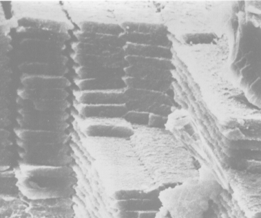
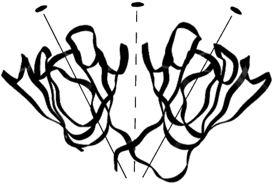

The transparency of the normal eye lens is dependent on its ability to bring proteins to a high concentration and this in turn creates a medium of high refractive index. These lens proteins are called "crystallins" because the ancient Greeks considered the lens to be "ice-like" in appearance.

Scanning electron micrograph of a section of a bovine lens showing
layers of lens fibre cells. In cross section the widest dimension of a cell
is around 5mM.
However, it is the regular organisation of ribbon-like cells, showing
hexagonal close packing, (see image above) that is crystal-like
whereas the crystallin protein molecules inside the cells exhibit more
liquid-like or glass-like behaviour.
Light scattering in the eye lens
increases with age and causes cataract.
Because the lens grows (throughout life) from an inverted section of ectoderm, cells are never shed, but are deposited in layers that contain a record of all the crystallins ever made. This means that foetal crystallin proteins form the centre of the lens and so have to last a lifetime. Cataract occurs because the ageing crystallin proteins are no longer evenly distributed on the scale of light wavelength. What is needed is an understanding of crystallin protein interactions at high concentration and how these interactions change with age. Crystallography can be used to determine the 3D structures of the individual protein subunits and assemblies. Furthermore the crystal structures highlight those regions of the molecules that are likely to effect their solution properties at high concentration.
All vertebrate lenses are made from a range of differently sized protein
assemblies, the alpha -, beta - and gamma-crystallins. The
~1000kD polydisperse alpha-crystallins are members of the ubiquitous
small-heat shock protein family. Recently Sung-Hou Kim and co-workers solved
the X-ray structure of a distantly related monodisperse protein from the
kingdom of the archea, and showed that the molecule assembled into
a shell with cubo-octahedral symmetry. We have solved the X-ray structures
of several members of the -crystallin superfamily. The basic structural unit
is an ~10kD beta-sheet globular domain formed from two "Greek key"
motifs organised about an approximate dyad. The gamma-crystallins are a
family of 2-domain monomers in solution with the X-ray structures showing
that the two domains are paired about a further pseudo twofold axis (see
figure opposite). The sequence related b-crystallins form dimers
and higher oligomers. The X-ray structures showed that dimerisation was
achieved by changing the conformation of the domain linker: this allowed
intermolecular domain pairing that was very similar to the intramolecular
domain pairing of gamma-crystallins. In other words, small changes
caused a doubling in size without the need for evolving a new protein
interface. At the high protein concentration of the crystal lattice, the
b-crystallin forms tetramers, using a new interface.

The figure shows a gamma-crystallin molecule made of two similar domains
organised about an approximate dyad. Each domain, of diameter 3 nanoM, is
formed from two similar Greek key motifs organised about a further pseudodyad.
The molecule was drawn using the program SETOR (Evans, S.V [1993]
J. Mol.Graphics 11:134-8.
There are seven kinds of beta-crystallin protomers allowing
for many combinations of dimers, tetramers and higher oligomers.
There are
seven gamma-crystallin monomers exhibiting a range of critical
temperatures for phase separation.The overall outcome is a complex set of
proteins displaying a range of concentration and temperature dependent
interactions. This first and foremost inhibits local crystallisation in the
lens which would cause jumps in the refractive index. It also forms the
basis for the laying down of a refractive index gradient, good enough to
allow the cones of the retina to be imaged through the optics of the human
eye.
The vertebrate eye lens is a relatively new structure whereas the
betagamma-crystallin superfold is ancient. Distant relatives have
been discovered in prokaryotes, slime moulds and sponges while closer
relatives have been found in the human genome performing functions outside
the eye lens. Some house-keeping enzymes are massively expressed in the
lenses of certain species. The predominantly alpha-helical
arginino-succinate lyase, and lactate dehydrogenase are also known as
delta- and epsilon-crystallin respectively in the highly
accommodating lenses of birds. It seems that during evolution ready-made
proteins have been used for a second, space-filling function in the lens,
evolving minor modifications as required. alpha-crystallin is also
expressed outside the lens and is up-regulated during stress in many kinds
of neurological diseases but in this case there might be a common function.
A topical idea is that alpha-crystallin stabilises denaturing
proteins, in common with many other heat shock proteins, and in the lens
this prevents the large aggregate formation that would lead to light
scattering. Much effort is now focussed on how substrate
betagamma-crystallins denature and bind to
alpha-crystallin.
Our crystal structures of the oligomeric beta- and delta-crystallins have shown tetramers with 222 symmetry assembling into higher order structures, 42 and 732 helices respectively. In the case of b-crystallin the superhelix was clearly stabilised by the N-terminal sequence extension from the betagamma globular superfold. Many of our mutant domain crystallin structures, where extensions and linkers have been changed, show major changes in solubility and higher order assembly. For example, changing the order of N- and C-terminal domains on the polypeptide chain (equivalent to exon shuffling at the genetic level) turns extensions into linkers and alters the hierarchy of domain assembly. Some sequence extensions appear to direct specific local domain assembly of crystallins whereas others exhibit random coil conformations that promote short-range order. The molecular details have to be put in the context of global properties of the lens in order to address the important medical questions. Do age related modifications to crystallins lead to stiffening of the protein-water matrix contributing to long-sightedness in middle age, and what triggers the increased protein aggregation in cataract in old age?
This work was supported by the Medical Research Council and the EU.
Christine Slingsby, Birkbeck College